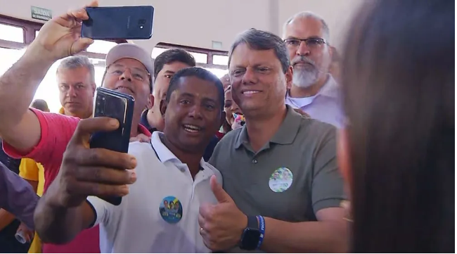

Tarcísio de Freitas fala em 'alívio financeiro' para ajudar Santas Casas contra crise
Candidato ao governo de São Paulo cumpriu agenda neste sábado (27) em Jales e Santa Fé do Sul (SP).

Tarcísio de Freitas (Republicanos) cumpriu agenda em Jales e Santa Fé do Sul (SP) — Foto: Reprodução/TV TEM
Tarcísio de Freitas (Republicanos), candidato ao governo de São Paulo, cumpriu agenda deste sábado (27) na Santa Casa de Jales
(SP) e falou sobre as medidas que pretende tomar para ajudar hospitais filantrópicos a enfrentarem a crise financeira.
De acordo com o candidato, as Santas Casas têm papel fundamental no atendimento de alta complexidade, por isso o governo precisa atuar no “alívio financeiro”.
“Primeiro, junto ao Governo Federal para obter revisão na tabela SUS. Para que mais recursos possam chegar para remunerar os procedimentos que lá são feitos.
Segundo, com participação maior do estado para as Santas Casas. De onde vai sair o dinheiro para a contrapartida maior? Pelo aumento da eficácia da atenção primária pelo combate ao desperdício para que a gente possa realmente investir nas Santas Casas”, disse.
Tarcísio de Freitas também afirmou que, se eleito, vai diminuir a tributação fiscal no estado para atrair novos investidores e aumentar a geração de empregos.
O último compromisso do candidato foi em Santa Fé do Sul (SP), cidade que é um dos polos de piscicultura do estado, e participou de uma carreata no Centro.